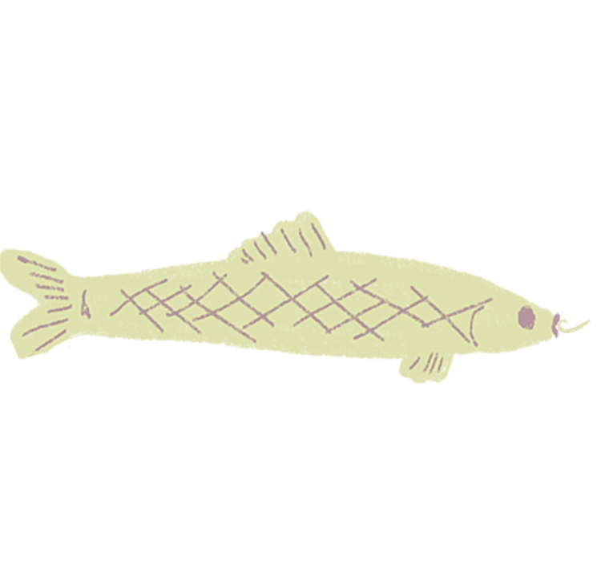
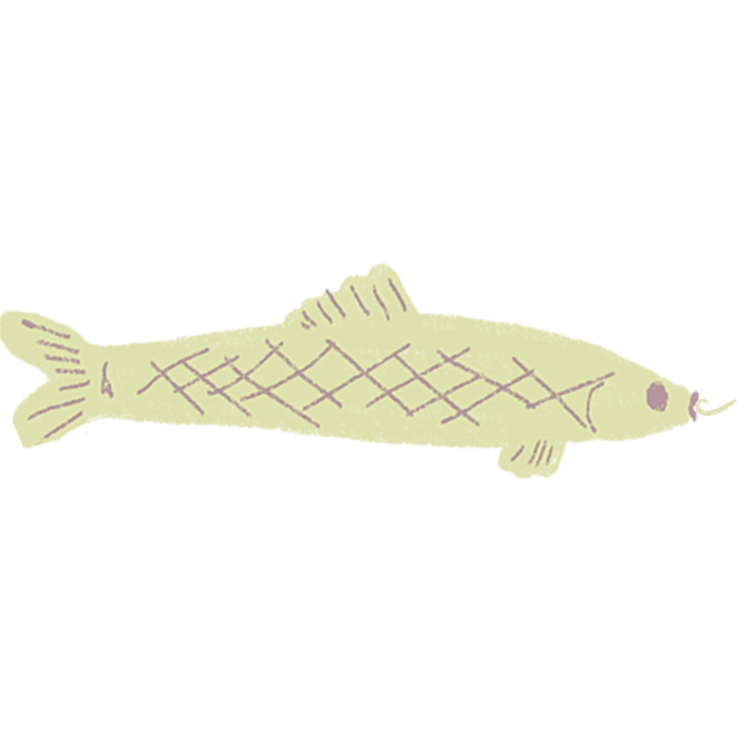

CHAPITRE 1
LILO
Il était une fois..dans la forêt enchantée
Lilo, le chien au cœur pur, dansait parmi les rayons dorés du soleil.
Perdue dans ses rêveries, Lilo ne vit pas le trou qui se dressait devant elle et y tomba.


Lilo tomba et tomba, emportée par le tourbillon de ses rêves.
CHAPITRE 2
TÊTE DANS LES NUAGES


 
